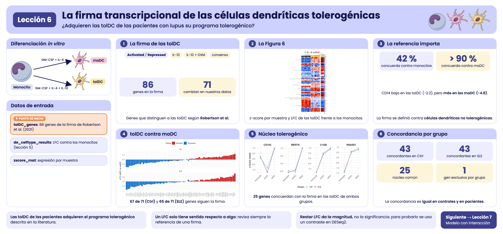
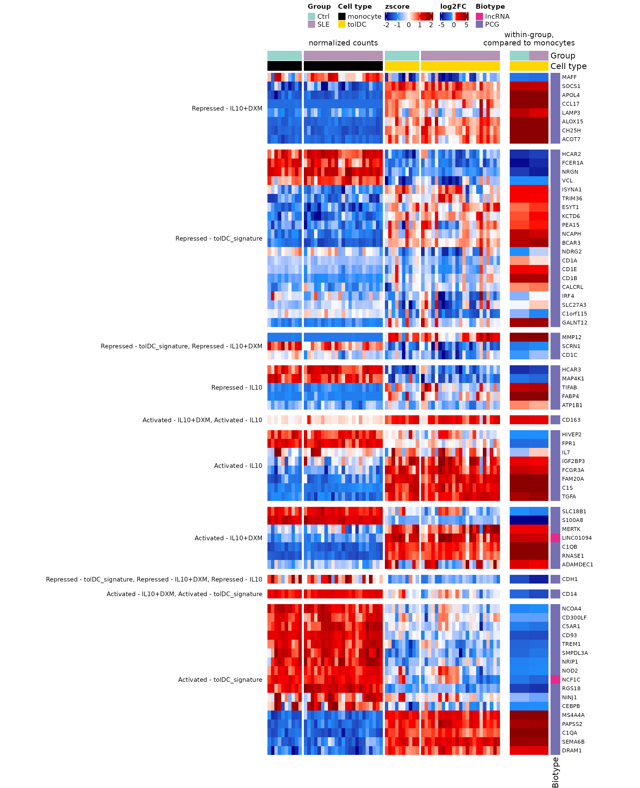
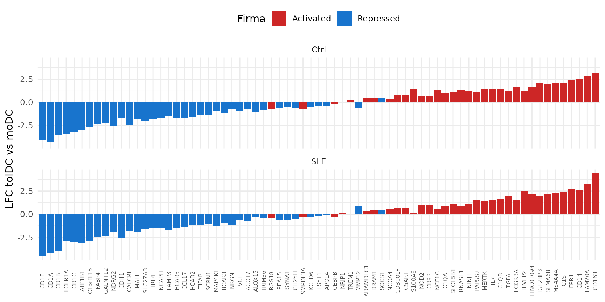

Lección 6: La firma transcripcional de las células dendríticas tolerogénicas
¿Adquieren las tolDC de las pacientes con lupus su programa tolerogénico?
2026-10-28
Source:vignettes/l6_DEGs_tolDcs_es.Rmd
l6_DEGs_tolDcs_es.RmdBienvenida
Las células dendríticas tolerogénicas (tolDC) son una promesa terapéutica para el lupus: en lugar de activar al sistema inmune, lo calman. Pero para usarlas en pacientes hay que responder una pregunta: ¿las tolDC obtenidas de pacientes con lupus adquieren el mismo programa tolerogénico que las de personas sanas? En esta lección lo evaluamos con una firma transcripcional publicada.
Lo que necesitas saber antes: haber hecho la lección Diferenciación de monocitos a células dendríticas.
Al terminar podrás:
- Usar una firma transcripcional de la literatura para evaluar tus propias muestras.
- Combinar en una figura la expresión por muestra (z-score) y el cambio por comparación (LFC).
- Explicar por qué la elección de la referencia cambia la interpretación de un LFC.
- Calcular el cambio entre dos tipos celulares a partir de dos comparaciones con la misma referencia.
- Reproducir la Figura 6 del artículo.
- Contar genes concordantes y divergentes con una firma e identificar su núcleo común.
Tiempo estimado: 1 hora.
Mapa de la lección
flowchart LR A["tolDC_genes
firma de Robertson et al."] --> C["71 genes de la firma
que son DEG"] B["de_celltype_results
(lección 5)"] --> C C --> D["z-score por muestra
(zscore_mat)"] C --> E["LFC tolDC
vs monocito"] D --> F["Figura 6"] E --> F C --> G["¿Coincide la dirección?
Elegir la referencia"]
Glosario
Estos son los términos que usaremos. Vuelve aquí cada vez que lo necesites.
- Tolerancia inmunológica: capacidad del sistema inmune de no atacar al propio cuerpo; en el lupus se pierde.
- tolDC: células dendríticas tolerogénicas; promueven la tolerancia inmunológica.
- Firma transcripcional: conjunto de genes cuya expresión caracteriza a un tipo o estado celular.
- Activado / reprimido: gen que sube / baja en el estado celular de interés respecto a una referencia.
- IL-10, dexametasona (DXM): una citocina antiinflamatoria y un glucocorticoide que se usan para generar tolDC in vitro.
- Referencia: el tipo celular contra el que se calcula un LFC; cambiarla cambia el signo y el tamaño del LFC.

Resumen visual de la lección 6.
1. Preparación
library(GeneExprLupusMx) # datos del paquete
library(tidyverse) # manipulación de tablas y gráficas
library(ComplexHeatmap) # heatmaps
library(circlize) # escalas de color para ComplexHeatmapColores y umbrales (los mismos de las lecciones anteriores):
cell_color <- c(monocyte = "black", moDC = "palevioletred", tolDC = "gold1")
group_color <- c(Ctrl = "#96d4ccff", SLE = "#b493b4ff")
biotype_color <- c(PCG = "#7570B3", lncRNA = "#E7298A")
zscore_color <- colorRamp2(c(-2, -1, 0, 1, 2), c("darkblue", "dodgerblue", "white", "red", "darkred"))
lfc_color <- colorRamp2(c(-5, -1, 0, 1, 5), c("darkblue", "dodgerblue", "white", "red", "darkred"))
lfc_threshold <- 1
padj_threshold <- 0.052. Paso 1: la firma de las tolDC
Robertson et
al. (2021) compararon tolDC generadas con distintos protocolos e
identificaron los genes que distinguen a las tolDC. El paquete los
incluye en tolDC_genes:
head(tolDC_genes)
#> gene tolDC_signature biotype
#> 1 RNASE1 Activated - IL10+DXM PCG
#> 2 S100A8 Activated - IL10+DXM PCG
#> 3 CD163 Activated - IL10+DXM, Activated - IL10 PCG
#> 4 SELENOP Activated - IL10+DXM PCG
#> 5 LINC01094 Activated - IL10+DXM lncRNA
#> 6 SLC18B1 Activated - IL10+DXM PCG
#> link
#> 1 https://www.frontiersin.org/journals/immunology/articles/10.3389/fimmu.2021.733231/full
#> 2 https://www.frontiersin.org/journals/immunology/articles/10.3389/fimmu.2021.733231/full
#> 3 https://www.frontiersin.org/journals/immunology/articles/10.3389/fimmu.2021.733231/full
#> 4 https://www.frontiersin.org/journals/immunology/articles/10.3389/fimmu.2021.733231/full
#> 5 https://www.frontiersin.org/journals/immunology/articles/10.3389/fimmu.2021.733231/full
#> 6 https://www.frontiersin.org/journals/immunology/articles/10.3389/fimmu.2021.733231/full
dplyr::count(tolDC_genes, tolDC_signature)
#> tolDC_signature n
#> 1 Activated - IL10 9
#> 2 Activated - IL10+DXM 8
#> 3 Activated - IL10+DXM, Activated - IL10 1
#> 4 Activated - IL10+DXM, Activated - tolDC_signature 1
#> 5 Activated - tolDC_signature 23
#> 6 Repressed - IL10 7
#> 7 Repressed - IL10+DXM 8
#> 8 Repressed - tolDC_signature 25
#> 9 Repressed - tolDC_signature, Repressed - IL10+DXM 3
#> 10 Repressed - tolDC_signature, Repressed - IL10+DXM, Repressed - IL10 1Cada categoría tiene dos partes:
-
Dirección:
Activated(el gen sube en las tolDC) oRepressed(baja). -
Protocolo: tolDC generadas con IL-10
(
IL10), con IL-10 y dexametasona (IL10+DXM), o la firma de consenso de tolDC (tolDC_signature). Algunos genes aparecen en varios protocolos.
3. Paso 2: ¿qué genes de la firma cambian en nuestros datos?
Usamos los resultados de la lección anterior
(de_celltype_results): cada célula dendrítica comparada
contra los monocitos, en controles y pacientes. Nos quedamos con los
genes de la firma que son DEG en al menos una de las
cuatro comparaciones:
deg_genes <- function(comparison) {
df <- de_celltype_results[[comparison]]
df$gene[!is.na(df$padj) & df$padj < padj_threshold & abs(df$log2FoldChange) >= lfc_threshold]
}
all_deg <- unique(unlist(lapply(names(de_celltype_results), deg_genes)))
signature_deg <- tolDC_genes %>%
filter(gene %in% all_deg, gene %in% rownames(zscore_mat))
nrow(signature_deg)
#> [1] 71
dplyr::count(signature_deg, biotype)
#> biotype n
#> 1 PCG 69
#> 2 lncRNA 271 de los 86 genes de la firma cambian durante la diferenciación de nuestras células. Casi todos codifican proteínas (PCG); dos son RNA largos no codificantes (lncRNA).
4. Paso 3: la Figura 6
La figura tiene dos heatmaps alineados por gen:
- Izquierda: la expresión (z-score) de cada gen en cada muestra de monocitos y tolDC, de controles y pacientes.
- Derecha: el LFC de las tolDC respecto a los monocitos, en controles y en pacientes.
Preparamos la parte izquierda con el checkpoint
zscore_mat:
sample_info <- metadata_cleaned %>%
filter(Cell_type %in% c("monocyte", "tolDC")) %>%
mutate(condition = factor(paste(Group, Cell_type, sep = "_"),
levels = c("Ctrl_monocyte", "SLE_monocyte", "Ctrl_tolDC", "SLE_tolDC"))) %>%
arrange(condition)
zscore_sig <- zscore_mat[signature_deg$gene, sample_info$sample_ID]
dim(zscore_sig)
#> [1] 71 66Y la derecha, con el LFC de las tolDC:
lfc_sig <- sapply(de_celltype_results[c("Ctrl_tolDC", "SLE_tolDC")], function(df)
df$log2FoldChange[match(signature_deg$gene, df$gene)])
rownames(lfc_sig) <- signature_deg$gene
head(lfc_sig)
#> Ctrl_tolDC SLE_tolDC
#> RNASE1 11.397672 9.845166
#> S100A8 -7.470788 -7.799939
#> CD163 2.079173 1.746231
#> LINC01094 2.870405 2.776301
#> SLC18B1 -1.023044 -1.479387
#> MERTK 1.427936 1.628772Fijamos el orden de las categorías y de los genes. Dentro de cada categoría, los genes están ordenados por similitud (clustering); aquí escribimos ese orden explícitamente para que la figura siempre se vea igual:
fig6_order <- list(
"Repressed - IL10+DXM" = c("MAFF", "SOCS1", "APOL4", "CCL17", "LAMP3", "ALOX15", "CH25H", "ACOT7"),
"Repressed - tolDC_signature" = c("HCAR2", "FCER1A", "NRGN", "VCL", "ISYNA1", "TRIM36", "ESYT1",
"KCTD6", "PEA15", "NCAPH", "BCAR3", "NDRG2", "CD1A", "CD1E",
"CD1B", "CALCRL", "IRF4", "SLC27A3", "C1orf115", "GALNT12"),
"Repressed - tolDC_signature, Repressed - IL10+DXM" = c("MMP12", "SCRN1", "CD1C"),
"Repressed - IL10" = c("HCAR3", "MAP4K1", "TIFAB", "FABP4", "ATP1B1"),
"Activated - IL10+DXM, Activated - IL10" = c("CD163"),
"Activated - IL10" = c("HIVEP2", "FPR1", "IL7", "IGF2BP3", "FCGR3A", "FAM20A", "C1S", "TGFA"),
"Activated - IL10+DXM" = c("SLC18B1", "S100A8", "MERTK", "LINC01094", "C1QB", "RNASE1", "ADAMDEC1"),
"Repressed - tolDC_signature, Repressed - IL10+DXM, Repressed - IL10" = c("CDH1"),
"Activated - IL10+DXM, Activated - tolDC_signature" = c("CD14"),
"Activated - tolDC_signature" = c("NCOA4", "CD300LF", "C5AR1", "CD93", "TREM1", "SMPDL3A", "NRIP1",
"NOD2", "NCF1C", "RGS18", "NINJ1", "CEBPB", "MS4A4A", "PAPSS2",
"C1QA", "SEMA6B", "DRAM1"))
# ¿Son los mismos 71 genes que seleccionamos?
setequal(unlist(fig6_order), signature_deg$gene)
#> [1] TRUE
# reordenar genes, z-scores y LFC según la figura
fig6_genes <- unlist(fig6_order, use.names = FALSE)
fig6_split <- factor(rep(names(fig6_order), lengths(fig6_order)), levels = names(fig6_order))
signature_deg <- signature_deg[match(fig6_genes, signature_deg$gene), ]
zscore_sig <- zscore_sig[fig6_genes, ]
lfc_sig <- lfc_sig[fig6_genes, ]Con todo en orden, dibujamos los dos paneles:
ht_zscore <- Heatmap(
zscore_sig, name = "zscore", col = zscore_color,
cluster_rows = FALSE, cluster_columns = FALSE, # el orden viene de fig6_order
show_row_names = FALSE, show_column_names = FALSE,
top_annotation = HeatmapAnnotation(
Group = as.character(sample_info$Group),
"Cell type" = as.character(sample_info$Cell_type),
col = list(Group = group_color, "Cell type" = cell_color),
show_annotation_name = FALSE),
column_split = sample_info$condition,
column_title = c("", "normalized counts", "", ""), column_title_gp = gpar(fontsize = 11),
row_split = fig6_split, row_title_rot = 0,
row_title_gp = gpar(fontsize = 9), row_gap = unit(3, "mm"),
heatmap_legend_param = list(direction = "horizontal"),
width = unit(12, "cm"))
ht_lfc <- Heatmap(
lfc_sig, name = "log2FC", col = lfc_color,
cluster_columns = FALSE, show_column_names = FALSE,
column_title = "within-group,\ncompared to monocytes", column_title_gp = gpar(fontsize = 11),
row_names_gp = gpar(fontsize = 8),
top_annotation = HeatmapAnnotation(
Group = c("Ctrl", "SLE"),
"Cell type" = c("tolDC", "tolDC"),
col = list(Group = group_color, "Cell type" = cell_color),
show_legend = FALSE),
right_annotation = rowAnnotation(Biotype = signature_deg$biotype,
col = list(Biotype = biotype_color)),
heatmap_legend_param = list(direction = "horizontal"),
width = unit(2, "cm"))
ht_fig6 <- ht_zscore + ht_lfc
ht_opt$message <- FALSE
draw(ht_fig6, ht_gap = unit(5, "mm"), merge_legends = TRUE,
heatmap_legend_side = "top", annotation_legend_side = "top")
Figura 6. Firmas transcripcionales asociadas a las tolDC obtenidas al comparar pacientes con lupus (SLE) y controles. Heatmaps que muestran 71 DEG asociados a las firmas transcripcionales de las tolDC (Robertson et al., 2021): 39 suben y 30 bajan en las tolDC de ambos grupos respecto a los monocitos, y 2 cambian en direcciones opuestas según el grupo. Las filas representan genes, agrupados por la categoría de la firma, y las columnas representan muestras de monocitos y tolDC diferenciadas in vitro, coloreadas según el tipo celular y el grupo (SLE o Ctrl). Panel izquierdo: heatmap con los valores de expresión génica normalizada (z-score). Panel derecho: heatmap con los valores de LFC de las tolDC respecto a los monocitos en cada grupo. Los DEG se seleccionaron con |LFC| ≥ 1 y padj < 0.05 en al menos una comparación (moDC o tolDC contra monocitos, en pacientes o en controles). Los biotipos se indican con colores: morado para los genes codificantes de proteínas (PCG) y rosa para los RNA largos no codificantes (lncRNA). SLE, lupus eritematoso sistémico; Ctrl, control sano; tolDC, células dendríticas tolerogénicas; LFC, log2 fold change.
La figura original se encuentra en el artículo.
Para guardarla en alta resolución:
png("Figura_6.png", width = 13, height = 16, units = "in", res = 300)
draw(ht_fig6, ht_gap = unit(5, "mm"), merge_legends = TRUE,
heatmap_legend_side = "top", annotation_legend_side = "top")
dev.off()¿Qué observas?
- En el panel izquierdo, los patrones de las tolDC de controles y pacientes son muy parecidos: los genes que se encienden o se apagan lo hacen en ambos grupos.
- En el panel derecho, los LFC de controles y pacientes casi siempre tienen el mismo color.
- Las tolDC de las pacientes adquieren el programa transcripcional tolerogénico, igual que las de los controles. Es una buena noticia para su posible uso terapéutico.
Reto 1. ¿Qué genes de la firma cambian en direcciones opuestas en las tolDC de controles y de pacientes?
Pista: compara el signo de las dos columnas de
lfc_sig.
5. Paso 4: ¿cambian en la dirección de la firma? La importancia de la referencia
La firma dice qué genes están activados o reprimidos en las tolDC. ¿Coincide con nuestros LFC?
expected <- ifelse(grepl("^Activated", signature_deg$tolDC_signature), 1, -1)
mean(sign(lfc_sig[, "Ctrl_tolDC"]) == expected)
#> [1] 0.4225352¡Solo coincide el 42 %! ¿Las tolDC están mal diferenciadas? No: estamos usando otra referencia. Robertson et al. definieron la firma comparando tolDC contra células dendríticas no tolerogénicas (como nuestras moDC), mientras que nuestros LFC comparan tolDC contra monocitos.
Veamos CD14: es “activado” en la firma, pero baja en
nuestras tolDC.
sapply(de_celltype_results, function(df) round(df$log2FoldChange[df$gene == "CD14"], 2))
#> Ctrl_moDC Ctrl_tolDC SLE_moDC SLE_tolDC
#> -4.78 -2.23 -5.77 -3.15CD14 es un marcador de monocito: baja en las tolDC
(−2.2) y baja aún más en las moDC (−4.8). Comparada con la moDC,
la tolDC conserva más CD14, que es justo lo que
describe la firma.
5.1 De dos comparaciones a una
No necesitamos repetir el análisis para comparar tolDC contra moDC. Como ambas se compararon contra los mismos monocitos, en el mismo modelo, basta con restar:
lfc_all <- sapply(de_celltype_results, function(df)
df$log2FoldChange[match(signature_deg$gene, df$gene)])
rownames(lfc_all) <- signature_deg$gene
tol_vs_modc <- cbind(Ctrl = lfc_all[, "Ctrl_tolDC"] - lfc_all[, "Ctrl_moDC"],
SLE = lfc_all[, "SLE_tolDC"] - lfc_all[, "SLE_moDC"])
colMeans(sign(tol_vs_modc) == expected) # proporción que coincide con la firma
#> Ctrl SLE
#> 0.943662 0.915493Ahora más del 90 % de los genes coincide con la firma, en controles y en pacientes. La diferenciación tolerogénica funcionó; solo había que compararla contra la referencia correcta.
tibble(gene = rownames(tol_vs_modc), signature = ifelse(expected == 1, "Activated", "Repressed"),
Ctrl = tol_vs_modc[, "Ctrl"], SLE = tol_vs_modc[, "SLE"]) %>%
pivot_longer(c(Ctrl, SLE), names_to = "Group", values_to = "LFC") %>%
ggplot(aes(x = reorder(gene, LFC), y = LFC, fill = signature)) +
geom_col() +
facet_wrap(~ Group, ncol = 1) +
scale_fill_manual(values = c(Activated = "firebrick3", Repressed = "dodgerblue3")) +
labs(x = NULL, y = "LFC tolDC vs moDC", fill = "Firma") +
theme_minimal(base_size = 11) +
theme(axis.text.x = element_text(angle = 90, vjust = 0.5, size = 6), legend.position = "top")
Los genes “activados” (rojo) quedan casi todos a la derecha, con LFC positivo, y los “reprimidos” (azul) a la izquierda.
Restar LFC da la magnitud, no la significancia. La
resta da el mismo LFC que estimaría DESeq2, pero no su
valor p. Para probar estadísticamente tolDC contra moDC hay que pedirlo
al objeto de DESeq2, por ejemplo con
results(dds, contrast = c("Cell_type", "tolDC", "moDC")).
Reto 2. ¿Qué genes no coinciden con la firma aun usando la moDC como referencia?
Ver solución
tibble(gene = rownames(tol_vs_modc), signature = signature_deg$tolDC_signature,
Ctrl = round(tol_vs_modc[, "Ctrl"], 2), SLE = round(tol_vs_modc[, "SLE"], 2)) %>%
filter(sign(Ctrl) != expected | sign(SLE) != expected)
#> # A tibble: 6 × 4
#> gene signature Ctrl SLE
#> <chr> <chr> <dbl> <dbl>
#> 1 SOCS1 Repressed - IL10+DXM 0.5 0.43
#> 2 MMP12 Repressed - tolDC_signature, Repressed - IL10+DXM -0.6 0.91
#> 3 TREM1 Activated - tolDC_signature 0.27 0
#> 4 SMPDL3A Activated - tolDC_signature -0.71 -0.32
#> 5 RGS18 Activated - tolDC_signature -0.75 -0.47
#> 6 CEBPB Activated - tolDC_signature -0.16 -0.35Son pocos genes, la mayoría con LFC cercanos a cero. Las diferencias de protocolo entre estudios (citocinas, tiempos de cultivo) explican bien este nivel de discrepancia.
5.2 ¿Cuántos genes concuerdan y cuántos divergen?
Una forma común de resumir la comparación con una firma es contar: para cada comparación contra los monocitos, cuántos DEG de la firma cambian en la dirección esperada (concordantes) y cuántos en la contraria (divergentes).
concordance_df <- imap_dfr(de_celltype_results, function(df, comparison) {
df %>%
filter(!is.na(padj), padj < padj_threshold, abs(log2FoldChange) >= lfc_threshold) %>%
inner_join(tolDC_genes, by = "gene") %>%
mutate(comparison = comparison,
Group = sub("_.*", "", comparison),
status = ifelse(sign(log2FoldChange) == ifelse(grepl("^Activated", tolDC_signature), 1, -1),
"Concordant", "Divergent"))
})
# por comparación
concordance_df %>%
dplyr::count(comparison, status) %>%
pivot_wider(names_from = status, values_from = n)
#> # A tibble: 4 × 3
#> comparison Concordant Divergent
#> <chr> <int> <int>
#> 1 Ctrl_moDC 17 47
#> 2 Ctrl_tolDC 26 31
#> 3 SLE_moDC 17 46
#> 4 SLE_tolDC 26 33
# por grupo (suma de las comparaciones moDC y tolDC)
concordance_counts <- concordance_df %>%
dplyr::count(Group, status) %>%
pivot_wider(names_from = status, values_from = n)
concordance_counts
#> # A tibble: 2 × 3
#> Group Concordant Divergent
#> <chr> <int> <int>
#> 1 Ctrl 43 78
#> 2 SLE 43 79Sumando las dos comparaciones, en los controles 43 genes concuerdan con la firma y 78 divergen; en las pacientes, 43 concuerdan y 79 divergen. Ojo: aquí cada gen puede contarse dos veces (una en moDC y otra en tolDC).
¿Qué genes concuerdan con la firma en las tolDC de ambos grupos?
concordant_tolDC <- function(group) {
concordance_df$gene[concordance_df$comparison == paste0(group, "_tolDC") &
concordance_df$status == "Concordant"]
}
core_genes <- sort(intersect(concordant_tolDC("Ctrl"), concordant_tolDC("SLE")))
length(core_genes)
#> [1] 25
core_genes
#> [1] "ADAMDEC1" "C1QA" "C1QB" "C1S" "CD163" "CDH1"
#> [7] "DRAM1" "FAM20A" "FCER1A" "FCGR3A" "HCAR2" "HCAR3"
#> [13] "IGF2BP3" "LINC01094" "MAFF" "MAP4K1" "MERTK" "MS4A4A"
#> [19] "NRGN" "PAPSS2" "RNASE1" "SCRN1" "SEMA6B" "TGFA"
#> [25] "VCL"Estos 25 genes forman un núcleo tolerogénico que el
protocolo con IL-10 reproduce igual en controles y en pacientes; entre
ellos están CD163, MERTK, C1QA,
C1QB y RNASE1.
Pero los conteos anteriores usan los monocitos como referencia, y la sección 5.1 mostró que con esa referencia la dirección engaña. Repitamos el conteo con la referencia de la firma, tolDC contra moDC, para los 71 genes de la firma que son DEG:
tibble(Group = colnames(tol_vs_modc),
Concordant = colSums(sign(tol_vs_modc) == expected),
Divergent = colSums(sign(tol_vs_modc) != expected))
#> # A tibble: 2 × 3
#> Group Concordant Divergent
#> <chr> <dbl> <dbl>
#> 1 Ctrl 67 4
#> 2 SLE 65 6Resultados
- El protocolo con IL-10 reproduce un núcleo de la firma tolerogénica: 25 genes concuerdan con la firma en las tolDC de ambos grupos.
- La concordancia es igual en ambos grupos: 43 genes concordantes en controles y 43 en pacientes.
- La divergencia depende de la referencia: contra los monocitos muchos genes parecen ir en sentido contrario, pero contra las moDC, la referencia de la firma, casi todos concuerdan.
Reto 3. ¿Cuántos de los 25 genes del núcleo
tolerogénico están activados y cuántos reprimidos en la firma? ¿Siguen
concordando con la firma cuando la referencia es la moDC
(tol_vs_modc)?
Ver solución
core_expected <- expected[match(core_genes, signature_deg$gene)]
table(ifelse(core_expected == 1, "Activated", "Repressed"))
#>
#> Activated Repressed
#> 16 9
colSums(sign(tol_vs_modc[core_genes, ]) == core_expected) # genes concordantes
#> Ctrl SLE
#> 25 25Los 25 genes concuerdan con la firma también contra la moDC, en controles y en pacientes: son el núcleo más robusto del programa tolerogénico.
Reto 4. ¿Qué gen concuerda con la firma en las tolDC de los controles, pero no en las de las pacientes? ¿Y al revés?
6. Resumen
| Paso | Función clave | ¿Para qué? |
|---|---|---|
| Cargar una firma | tolDC_genes |
Usar conocimiento previo para evaluar tus datos |
| Seleccionar genes | filter(gene %in% all_deg) |
Quedarte con los genes de la firma que cambian |
| Expresión por muestra | zscore_mat |
Ver la variabilidad entre muestras |
| Cambio por comparación | LFC de de_celltype_results
|
Resumir el cambio de cada grupo |
| Cambiar de referencia | resta de LFC | Comparar dos tipos celulares sin repetir el análisis |
| Contar concordancias |
imap_dfr(), intersect()
|
Resumir cuántos genes siguen la firma en cada grupo |
Errores comunes de principiante
- Comparar con una firma sin revisar su referencia: un LFC solo tiene sentido respecto a algo.
- Concluir que algo “falló” porque no coincide la dirección: primero verifica que estás comparando lo mismo.
- Usar la resta de LFC como prueba estadística: da la magnitud, no el valor p.
7. Próximos pasos
Las tolDC de las pacientes adquieren el programa tolerogénico descrito en la literatura, de forma muy similar a las de los controles. Sin embargo, comparar los LFC de dos modelos separados no permite probar estadísticamente si la diferenciación difiere entre grupos. La lección ¿Se diferencian igual las células de pacientes y controles? responde esta pregunta con un modelo de interacción.
Para continuar, da clic en el botón Siguiente lección: Comparar la diferenciación entre grupos al final de esta página.
↑ Volver a InicioInformación de la sesión
sessionInfo()
#> R version 4.6.1 (2026-06-24)
#> Platform: x86_64-pc-linux-gnu
#> Running under: Ubuntu 24.04.5 LTS
#>
#> Matrix products: default
#> BLAS: /usr/lib/x86_64-linux-gnu/openblas-pthread/libblas.so.3
#> LAPACK: /usr/lib/x86_64-linux-gnu/openblas-pthread/libopenblasp-r0.3.26.so; LAPACK version 3.12.0
#>
#> locale:
#> [1] LC_CTYPE=C.UTF-8 LC_NUMERIC=C LC_TIME=C.UTF-8
#> [4] LC_COLLATE=C.UTF-8 LC_MONETARY=C.UTF-8 LC_MESSAGES=C.UTF-8
#> [7] LC_PAPER=C.UTF-8 LC_NAME=C LC_ADDRESS=C
#> [10] LC_TELEPHONE=C LC_MEASUREMENT=C.UTF-8 LC_IDENTIFICATION=C
#>
#> time zone: UTC
#> tzcode source: system (glibc)
#>
#> attached base packages:
#> [1] grid stats graphics grDevices utils datasets methods
#> [8] base
#>
#> other attached packages:
#> [1] circlize_0.4.18 ComplexHeatmap_2.28.0
#> [3] lubridate_1.9.5 forcats_1.0.1
#> [5] stringr_1.6.0 dplyr_1.2.1
#> [7] purrr_1.2.2 readr_2.2.0
#> [9] tidyr_1.3.2 tibble_3.3.1
#> [11] ggplot2_4.0.3 tidyverse_2.0.0
#> [13] GeneExprLupusMx_0.0.0.9000
#>
#> loaded via a namespace (and not attached):
#> [1] shape_1.4.6.1 gtable_0.3.6 rjson_0.2.23
#> [4] xfun_0.62 bslib_0.12.0 GlobalOptions_0.1.4
#> [7] tzdb_0.5.0 vctrs_0.7.3 tools_4.6.1
#> [10] generics_0.1.4 stats4_4.6.1 parallel_4.6.1
#> [13] cluster_2.1.8.2 pkgconfig_2.0.3 RColorBrewer_1.1-3
#> [16] S7_0.2.2 desc_1.4.3 S4Vectors_0.50.3
#> [19] lifecycle_1.0.5 compiler_4.6.1 farver_2.1.2
#> [22] textshaping_1.0.5 codetools_0.2-20 clue_0.3-68
#> [25] htmltools_0.5.9 sass_0.4.10 yaml_2.3.12
#> [28] pillar_1.11.1 pkgdown_2.2.1 crayon_1.5.3
#> [31] jquerylib_0.1.4 cachem_1.1.0 iterators_1.0.14
#> [34] foreach_1.5.2 tidyselect_1.2.1 digest_0.6.39
#> [37] stringi_1.8.9 labeling_0.4.3 fastmap_1.2.0
#> [40] colorspace_2.1-4 cli_3.6.6 magrittr_2.0.5
#> [43] utf8_1.2.6 withr_3.0.3 scales_1.4.0
#> [46] timechange_0.4.0 rmarkdown_2.32 matrixStats_1.5.0
#> [49] otel_0.2.0 ragg_1.5.2 png_0.1-9
#> [52] GetoptLong_1.1.1 hms_1.1.4 evaluate_1.0.5
#> [55] knitr_1.52 IRanges_2.46.0 doParallel_1.0.17
#> [58] rlang_1.3.0 glue_1.8.1 BiocGenerics_0.58.1
#> [61] jsonlite_2.0.0 R6_2.6.1 systemfonts_1.3.2
#> [64] fs_2.1.0